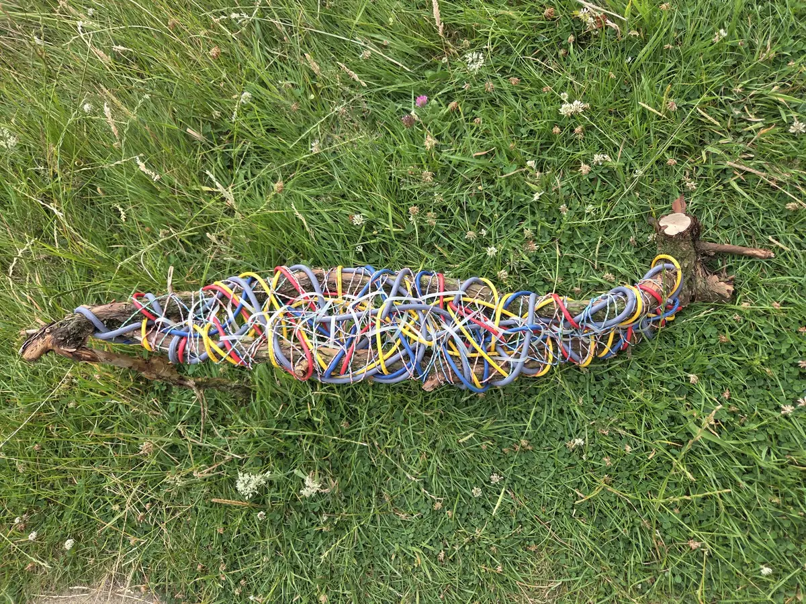
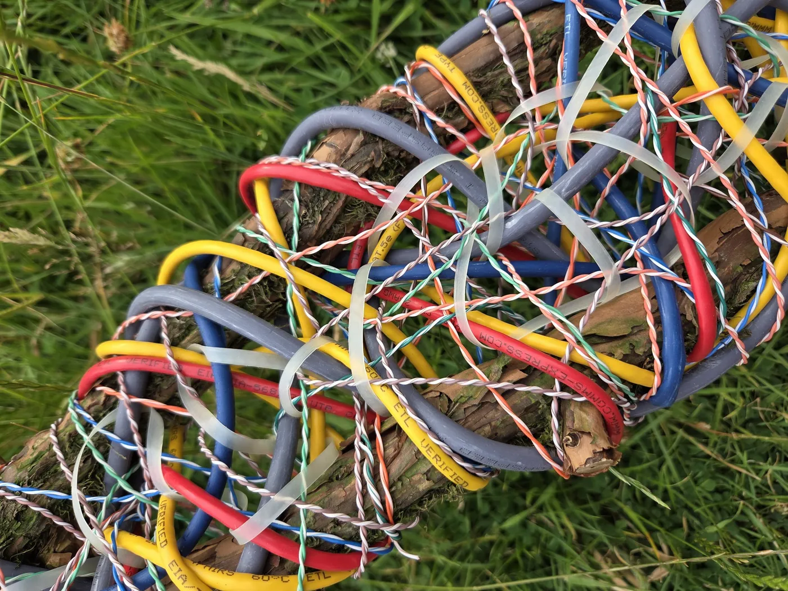
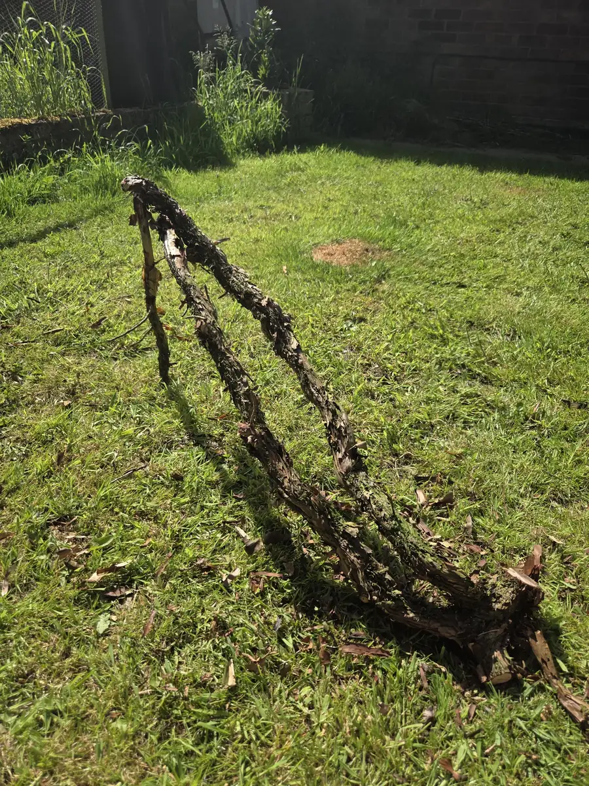
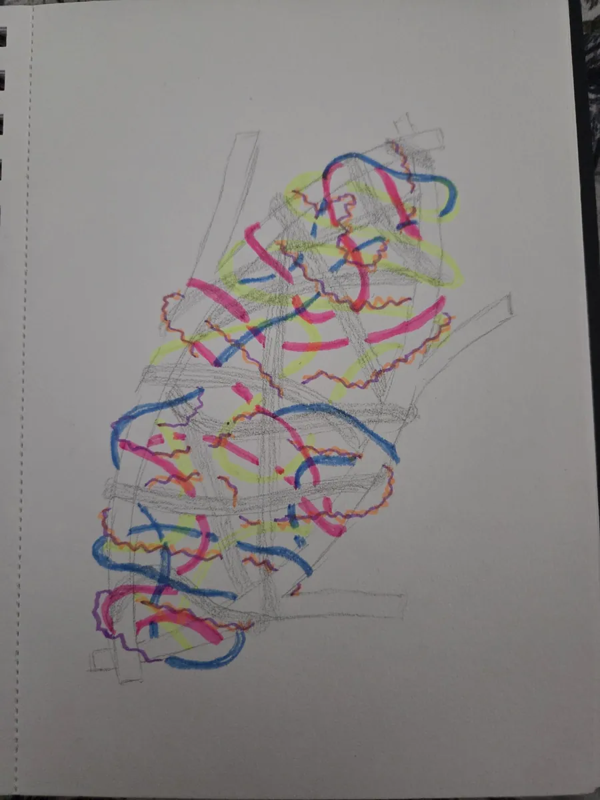
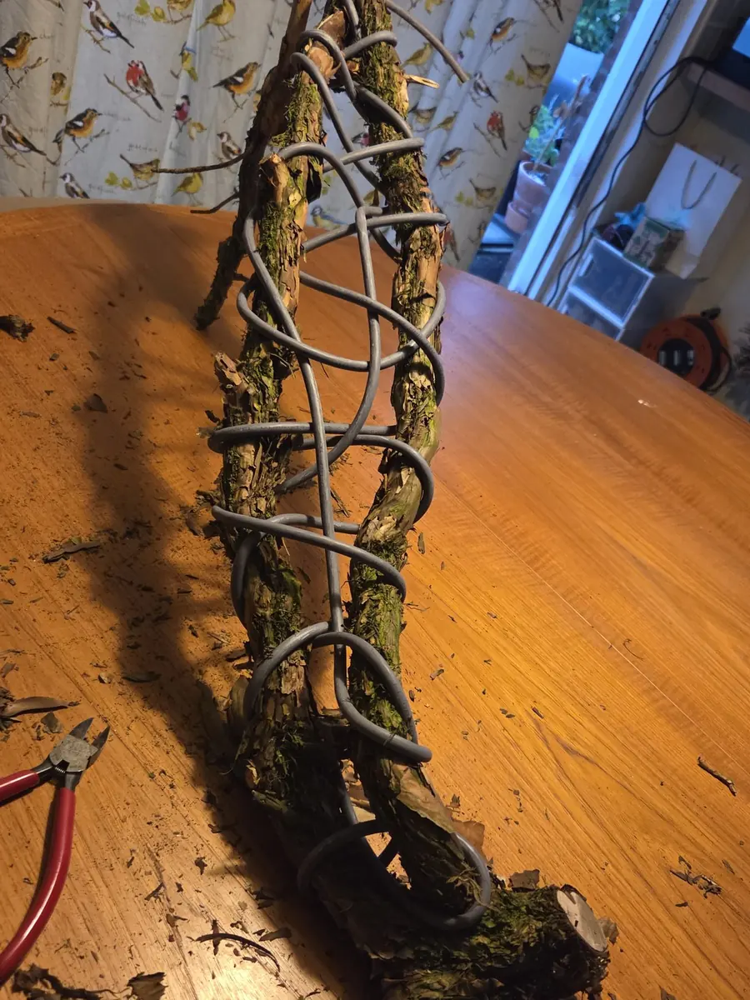
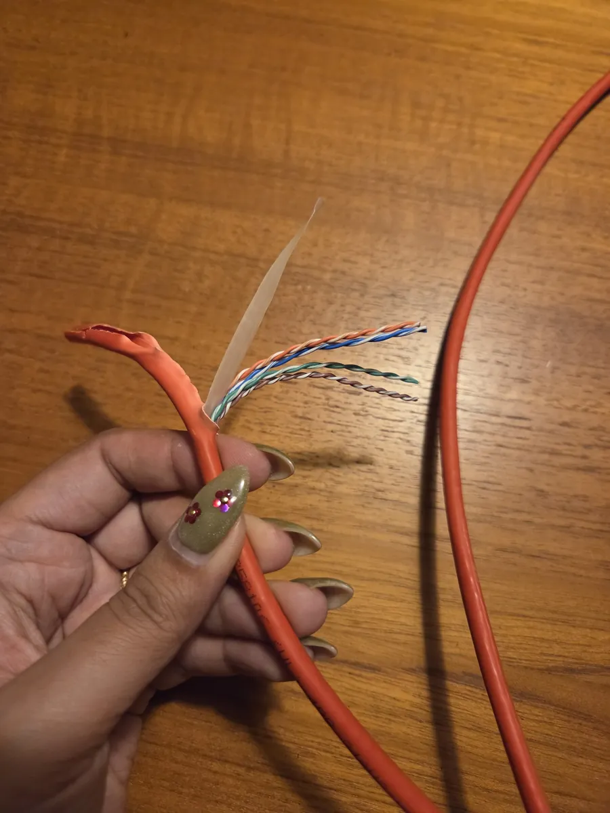
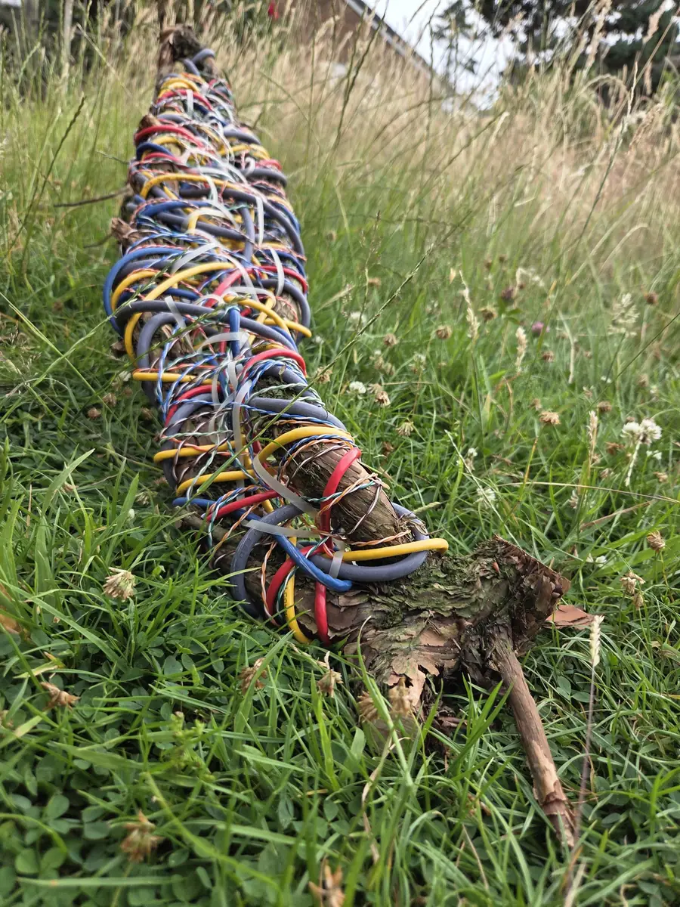
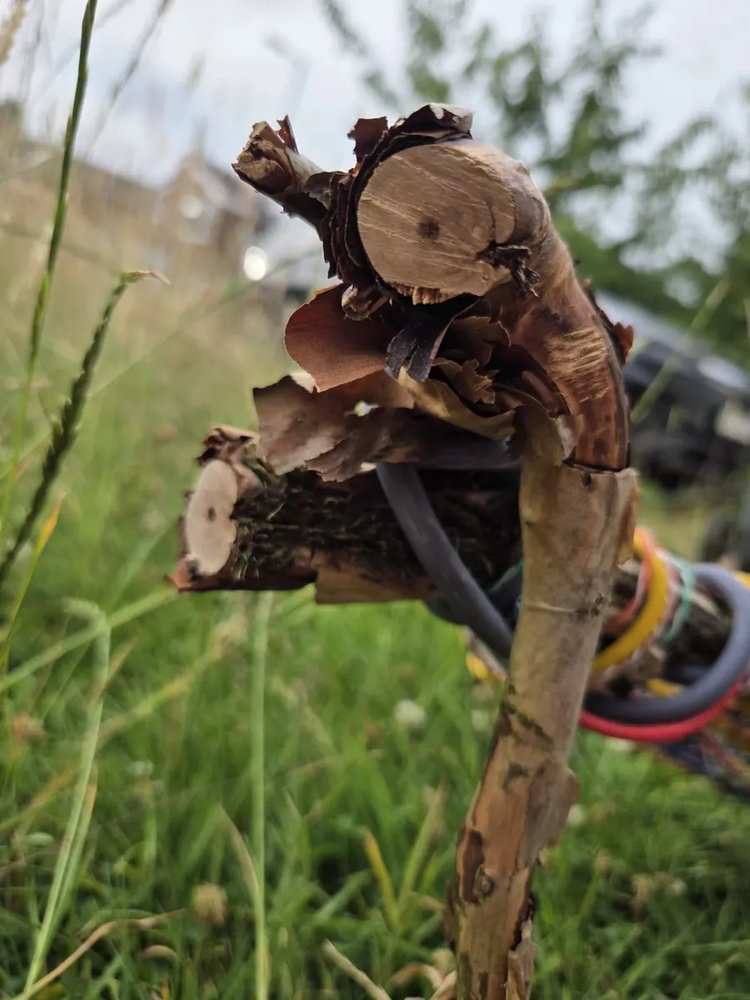

Twisted Pair
Basketmakers forage. I live in a suburb with a small garden, on a street where gardens are turning into block paving or astroturf. There is not much to gather here, and nowhere to gather it.
So these are the materials my life produces instead. A climbing hydrangea from my garden, half of which died when we replaced the fence. Scrap network cable from the data centres of various employers. Both were on their way to being thrown out. I spend my days working in technology and my nights working with willow and other natural materials. This is the first thing I have made from both.
The cable is wound tight enough that you can barely see the wood. The hydrangea is doing all the structural work and is almost invisible.
I did not sand it or strip the bark. It is still lifting, the lichen is still on it, and it sits against cable that is smooth and identical along its whole length.
Everyone who has seen it has said it was something different.
- Materials
- Climbing hydrangea, scrap Cat5e and Cat6a cable
- Size
- 92 × 16 × 38cm
- Made
- 2026
- Technique
- Frame, random weave






